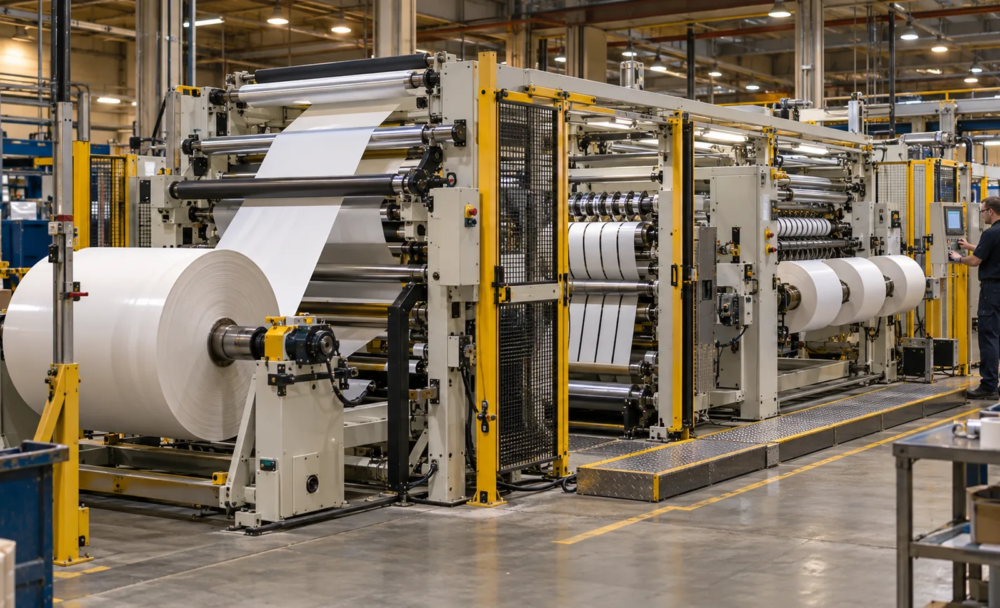
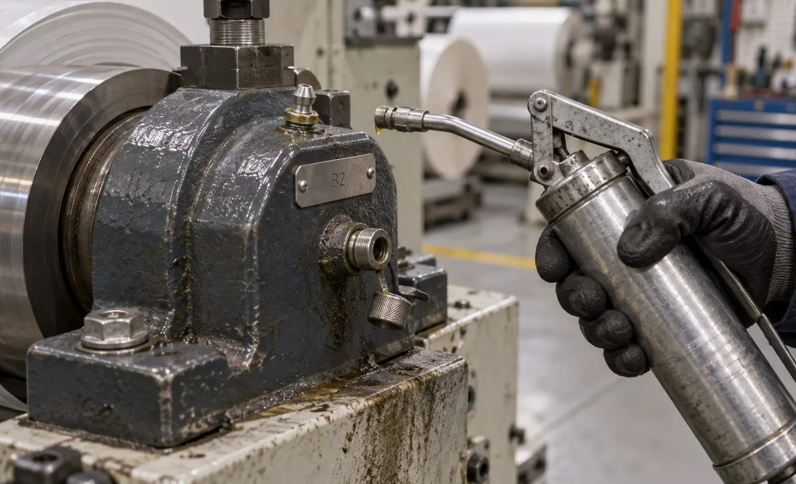

Published September 22, 2026 | By HDPTH Technical Editorial Team

Every quotation promises reliability, but few define it. The handover folder holds a generic chart naming a famous brand and nothing more, while practical questions wait for years: how many grease points exist, who can reach them, what happens when lint packs a seal. This guide turns lubrication into purchasable items you can specify, price and verify at acceptance.
The lubrication points that actually matter
A slitter rewinder has several distinct lubrication duties, and treating them alike is the first mistake. Shaft bearings run at web speed under moderate load and need grease whose base oil viscosity suits the bearing speed factor. Gearboxes carry torque to the rewind shafts and need the matching ISO VG grade and EP package. Linear guides and knife slides take short strokes and suffer stick-slip when starved, which appears as slit width drift. Dancer pivots and load-cell linkages are low-friction by design, so drag there becomes tension error; chains and sprockets on roll handling are slow, dirty and heavily loaded. Each group needs its own specification and interval.
| Point group | Typical specification driver | Failure mode if starved |
|---|---|---|
| Roll shaft bearings | Grease consistency and base oil viscosity matched to bearing speed and ambient temperature | Heat, vibration and roll diameter error |
| Gearboxes and reduction units | ISO VG grade by load and temperature, EP additive, synthetic option for high duty | Pitting, backlash and torque loss |
| Linear guides and knife slides | Way oil or EP grease that resists stick-slip and lint packing | Position error and repeatable slit-width loss |
| Chains, sprockets, open gears | Adhesive chain oil or semi-fluid grease with high film strength | Elongation, indexing error and roll-handling jams |
| Dancer pivots and load-cell linkages | Low-torque light grease with clean film, no graphite or dry additives | Friction bias in tension feedback |
Manual versus automatic lubrication
Manual grease points are cheap to buy and expensive to own: each nipple costs labour, access time and consistency, and consistency is what degrades in a busy month. Three options exist. Single-point dispensers suit isolated bearings and cost little. Centralized progressive or divider systems feed many points from one reservoir, meter volume per cycle and support monitoring. Oil circulation with filtration and sight glasses suits gearboxes and high-duty bearings. Ask what is delivered per point per cycle, how long the reservoir lasts at your run rate, where it is refilled, and how a blocked line is reported — a pump that only reports that it ran protects nothing.
Specifications written into the order, not discovered later
Write a specification rather than a brand: base oil type, ISO VG grade or NLGI consistency, thickener compatibility, EP or anti-wear requirement, and the operating band at your site. Include compatibility with what the plant already stocks, because mixing incompatible thickeners causes hardening or bleeding that looks like bearing failure. Require two approved equivalents per point so maintenance can source locally when supply breaks. Fill intervals, reserve volumes and purge quantities belong in the same document.
Contamination control in a lint-loaded environment
Nonwoven converting produces lint that packs into seals, wicks oil out of housings and abrades sliding surfaces, so contamination is a design problem before it is a housekeeping one. Specify shielded or labyrinth-protected housings on the web path, desiccant breathers instead of open plugs, magnetic plugs with sample ports on oil circuits, and regreasable units with purge capability rather than sealed-for-life bearings inside the dust stream. Keep extraction effective at the slitting section, worth checking together with your dust extraction design.
The preventive maintenance schedule
Express intervals in operating hours, not calendar weeks; a two-shift plant ages twice as fast doing the same orders. Check reservoir levels, unusual noise and heat, and clean slide surfaces each shift. Weekly work covers the manual route or automatic cycle counters, chain tension and knife condition; monthly work covers gearbox levels, breathers and proof that automatic lubrication delivered. Quarterly work adds oil sampling, vibration screening and torque checks. Annually, change oil on time or on analysis results, replace filters and breathers, and repeat the bearing survey.
Records, counters and the spare parts link
Preventive maintenance without records is opinion. The useful version has the machine supplying the data: hour counters per relevant axis, cycle counters for automatic lubrication, alarm history for low level and blockage, and an export path into your CMMS. That data can then sit beside production data used for OEE and downtime analysis. Then close the loop with spares — every interval reveals wear items, so require a recommended spares list grouped by PM task: seals, breathers, chains, idler bearings, filters and nipples, aligned with your warranty and spare parts policy.
What to verify in the lubrication design before acceptance
- Time the full grease route at FAT with the supplied tools; require reach without removing interlocked guarding.
- Every point carries a permanent label matching the lubrication chart.
- Oil sample report per gearbox, with particle and water results within agreed limits.
- Low-level and line-blockage alarms demonstrated to the PLC and HMI, not just a pump status lamp.
- Hour and cycle counters visible in the HMI, with documented reset and export behaviour.
- Approved-equivalent lubricant list and the labelled chart in the technical file.

Writing lubrication requirements into an inquiry?
Send HDPTH your material range, speeds, shift pattern and duty cycle. We will return a point-by-point lubrication specification with automatic options, PM intervals and spare parts linkage.
Submit Your Project InquiryQuestions to put to every vendor
- How many lubrication points exist, and how many sit behind guarded or elevated positions?
- What is specified per point, in specification rather than brand terms, with approved equivalents?
- What is metered per cycle, and what is the reservoir autonomy at my running hours?
- How do low level, blocked line and pump fault reach the operator?
- Will you demonstrate the route, labels, counters and oil sample report at FAT?
Building the maintenance system around it?
Continue with our guides to idler roller maintenance and operator training so the PM plan survives staff rotation.
Contact HDPTHFrequently asked questions
How often should a slitter rewinder be lubricated?
Intervals belong in operating hours, not calendar dates, because one-shift and two-shift plants age very differently. Check reservoirs and listen for bearing change each shift, grease manual points weekly to monthly by speed and duty, inspect gearbox levels monthly, sample oil quarterly, and change oil annually or on analysis whichever comes first. Require hours-based intervals with a revision clause once your own sample history exists.
Which grease or oil specification belongs in the purchase order?
Write a specification, not a brand: base oil type, ISO VG grade or NLGI consistency, thickener compatibility, EP or anti-wear requirement, and operating temperature range. Include compatibility with the lubricants your plant already stocks, since mixing incompatible greases is a common failure cause. Require two approved equivalents per point so maintenance can source locally, and make that list part of the technical file.
Is automatic centralized lubrication worth paying for?
It pays when the route is long, points hide behind guarding, or you run continuously. Progressive systems deliver metered volume from one reservoir to many points and flag blockage or low level instead of trusting a technician to reach every nipple on time; single-point dispensers suit isolated bearings. What matters is the alarm: low-level and blockage detection wired to the PLC, a counter in the HMI, and a refill point reachable without dismantling guards.
How should lint and dust contamination be controlled?
Nonwoven lint packs into seals and wicks oil out of bearings, so sealing strategy matters as much as the fluid. Require protected housings on the web path, desiccant breathers instead of open plugs, magnetic plugs and sample ports on oil circuits, and purging regreasable arrangements rather than sealed-for-life units inside the dust stream. Pair it with effective extraction at the slitting section.
What lubrication evidence should be delivered at FAT and handover?
Ask for a point-by-point chart whose labels match the machine, the specification and interval per point, proof that every point is reachable within the stated time using the supplied tools, an oil sample report per gearbox, demonstration of low-level and blockage alarms where automatic lubrication is fitted, and the hour counters that drive the schedule. Requested early, none of it is expensive; requested after start-up, each item becomes a site visit.